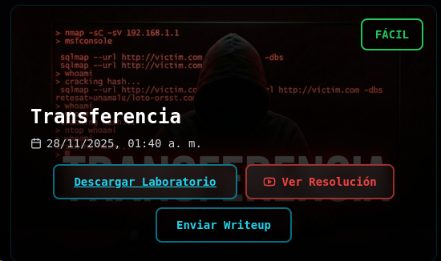

#Descargo link desde https://whoami-labs.com/downloads/transferencia.zip

#Ingreso a terminal y borro dockers de maquina anterior
sudo docker system prune -a --volumes sudo docker system prune -a --volumes
#Inicio laboratorio
sudo bash startlab.sh transferencia.tar
#Primer escaneo de objetivocon nmap -sV -sC 172.17.0.2
nmap -sV -sC 172.17.0.2
Starting Nmap 7.98 ( https://nmap.org ) at 2026-06-21 18:34 -0400
Nmap scan report for 172.17.0.2
Host is up (0.0000060s latency).
Not shown: 997 closed tcp ports (reset)
PORT STATE SERVICE VERSION
21/tcp open ftp vsftpd 3.0.5
| ftp-anon: Anonymous FTP login allowed (FTP code 230)
|_drwxr-xr-x 1 65534 65534 4096 Nov 27 2025 pub
| ftp-syst:
| STAT:
| FTP server status:
| Connected to 172.17.0.1
| Logged in as ftp
| TYPE: ASCII
| No session bandwidth limit
| Session timeout in seconds is 300
| Control connection is plain text
| Data connections will be plain text
| At session startup, client count was 1
| vsFTPd 3.0.5 - secure, fast, stable
|_End of status
22/tcp open ssh OpenSSH 10.0p2 Debian 7 (protocol 2.0)
80/tcp open http nginx
|_http-title: Transferencia
MAC Address: 0E:0D:B8:31:E6:EB (Unknown)
Service Info: OSs: Unix, Linux; CPE: cpe:/o:linux:linux_kernel
Service detection performed. Please report any incorrect results at https://nmap.org/submit/ .
Nmap done: 1 IP address (1 host up) scanned in 13.91 seconds
#a raiz de este resultado investigo
#1) protocolo http, busco en navegador IP + protocolo
#2)vulnero ftp
#3) vulnero ssh > flag